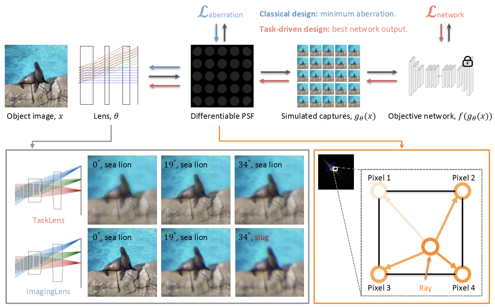

Task-driven Lens Design
Xinge Yang, Y. Nie, Qiang Fu, Wolfgang Heidrich
Optics Express 2026.

The task-driven lens design pipeline begins by calculating the PSF via differentiable ray tracing. This PSF is then convolved with input images to simulate camera captures. A well-trained computer vision network (e.g., for image classification) evaluates the final output error and backpropagates the loss function to optimize lens parameters. Unlike classical lens design, which minimizes optical aberrations, task-driven lens design prioritizes capturing image features that are most effective for downstream computer vision networks. After optimization, the designed TaskLens better preserves image structure details even in the presence of optical aberrations, leading to improved performance on the target computer vision task. In contrast, an ImagingLens, designed to produce clear captures, is more susceptible to performance degradation from optical aberrations, potentially resulting in misclassification.
Abstract
Classical lens design minimizes optical aberrations to produce sharp images, but is typically decoupled from downstream computer vision tasks. Existing end-to-end optical design learns optical encoding through joint optimization, but often suffers from an unstable training process. We propose task-driven lens design, a new optimization philosophy for joint optics-network systems. We freeze the pretrained vision model and optimize only the lens so that the image formation better fits the model's feature preferences. This network-frozen setting yields a low-dimensional and stable optimization process, enabling lens design from scratch without human intervention, thereby exploring a broader design space. Multiple computer vision experiments show that TaskLenses outperform classical ImagingLenses with the same or even fewer elements. Our analysis reveals that the learned optics exhibit long-tailed point spread functions, better preserving preferred structural cues when aberrations cannot be fully corrected. These results highlight task-driven design as a practical route for optical lenses that are compatible with modern vision models, and also inspire new optical design objectives beyond traditional aberration minimization.
Paper
Paper [Yang2026TaskLens.pdf]
Supplementary [Yang2026TaskLens_supp.pdf]